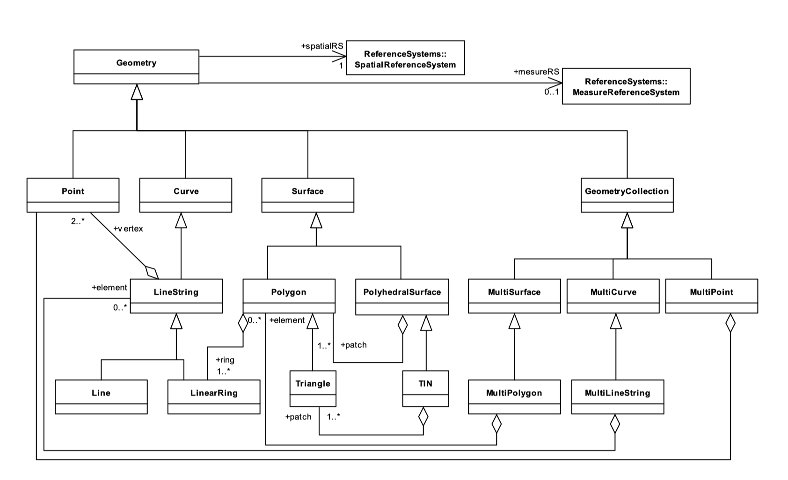

Simple Features
Simple Features (SF) are OGC standards describing two dimensional geographic features, such as Points and Polygons and the relations between them. The standards describe a hierarchy of types (Part 1), a functional interface with SQL (Part II) and an SQL/MM extension with support for circular geometry types, such as Circularstring.
Type hierarchy
All types used here come from the SF. We added Trait to all geometry types here to distinguish them from actual geometry structs.
 The SF Type hierarchy. From OpenGIS® Implementation Standard for Geographic information - Simple feature access - Part 1: Common architecture at http://www.opengis.net/doc/is/sfa/1.2.1.
Changes with respect to SF
While we try to adhere to SF, there are changes and extensions to make it more Julian.
Function names
All function names are without the ST_ prefix and are lowercased. In some cases the names have changed as well, to be inline with common Julia functions. NumX becomes nx and geomN becomes getgeom:
GeometryType -> geomtrait
NumGeometries -> ngeom
GeometryN -> getgeom
NumPatches -> npatch
# etcWe generalized ngeom and getgeom to apply to all geometries, not just a AbstractGeometryCollectionTraits.
We also simplified the dimension functions. From the three original (dimension, coordinateDimension, spatialDimension) there's now only the coordinate dimension, by using ncoords, which represent coordinate dimensions like X, Y, Z and M. Topological dimensions (a point is 0-dimensional), and the functions related to it, are not used in this interface to prevent confusion. Similarly, we do not overload the Julia ndims, to prevent confusion and possible conflict with custom vector based geometries.
coordinateDimension -> ncoords # x, y, z, m
dimension -> unused
spatialDimension -> unusedWe've generalized the naming of some functions:
SRID -> crs
envelope -> extent # also aliased to bboxAnd added a helper method to clarify the naming of coordinates.
coordnames = (:X, :Y, :Z, :M)Coverage
Not all SF functions are implemented, either as a possibly slower fallback or empty descriptor or not at all. The following SF functions are not (yet) available.
dimension # topological dimensions
spatialDimension
locateAlong
locateBetween